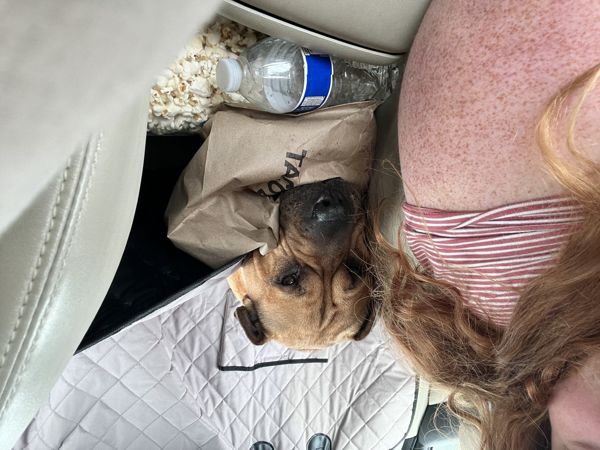

Welcome to Martinsville

About 20 miles north of Martinsville, I grew up on a little road called Persimmon Tree Lane. There I didn't grow up with computers, stable internet access, or cable television. Instead, I was able to train horses, hang out with the cows, and learn to identify and appriciate natures beauty. To have a sky so dark at night, that the stars were your light source. To walk outside and smell the dew on the grass and the manure of the farm. It was Home.
Molly
Molly is a golden doodle That I adopted with my roomates in 2020. When we split up she bcame soley my dog. She is almost 5 years old and a complete baby! Think of a teddy bear, all fluff and cuddles-- but no brain!
Champ
Champion was my first pet. I got him as a ktten, he was a gradution gift back in 2018(im aging myself). He is the sweetest cat and loves to play! Watch out if you me-ow back, you better be prepared to have a conversation.
Harper
Harper is the newest addition to my life! She was orginally my fiance's dog, but has quickly fit in with the pack! Just look at those wrinkles!!
The Conclusion
While I didn't spend much time in martinsville the city-- growing up in the country gave me the opportunity to connect with nature and explore nature.
Layout by Bootstrap